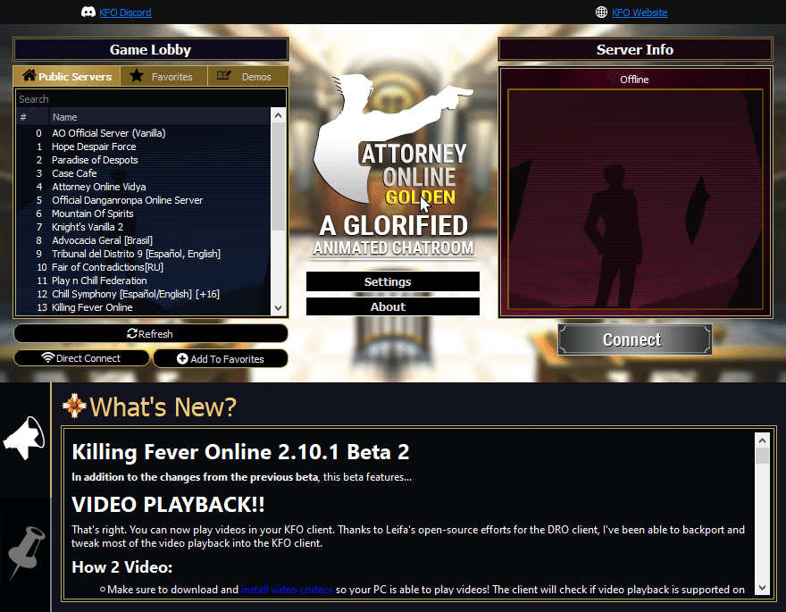

- Launch Attorney_Online.exe
- Search for "Killing Fever Online" in the "Public Servers" list
- Select "Killing Fever Online" in the list
- Click "Add to Favorites" if you haven't already!
- Click "Connect"
- You're in!
"Public Servers" doesn't work? Don't worry. You can still get in, like this:
- Navigate to base/ folder
- Open serverlist.txt
- Copy-paste the server IP if it's not there:
107.191.96.194:60002:Killing Fever Online - Save it (Ctrl+S)
- Launch Attorney_Online.exe
- Switch to "Favorites"
- Select "Killing Fever Online" in the list
- Click "Connect"
- You're in! 